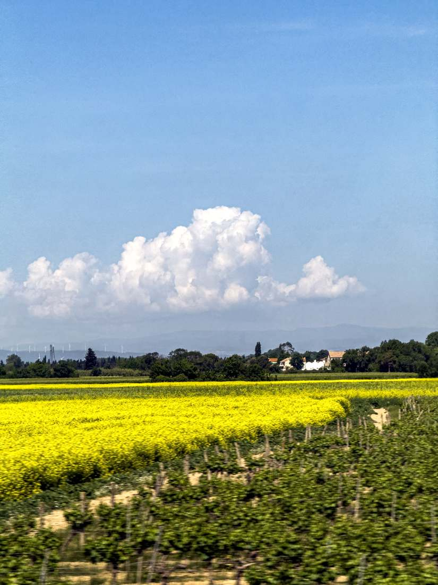

Stabilize · start screen study
Photographs become motion.
The cloud holds its place. Fields, trees, and light pass beneath it as each photograph replaces the last.

01 / 07
Seven real photos, shown in capture order. No fade or page turn between frames.